La Migración como Arma Geoestratégica: Análisis Crítico del
La Migración como Arma Geoestratégica: Análisis Crítico del "Weaponized Migration" en el Siglo XXI
Introducción
La instrumentalización de los flujos migratorios como herramienta de presión geopolítica representa uno de los fenómenos más complejos y éticamente controvertidos de las relaciones internacionales contemporáneas. El concepto de "migración armamentizada" (weaponized migration) ha emergido como una nueva dimensión de la guerra híbrida, donde los movimientos poblacionales trascienden su carácter humanitario para convertirse en instrumentos de coerción estatal y desestabilización regional.
Este análisis examina críticamente los mecanismos, actores y consecuencias de esta práctica, evaluando tanto sus dimensiones estratégicas como sus implicaciones humanitarias y legales en el marco del derecho internacional contemporáneo.
Marco Conceptual y Definiciones
Definición de Migración Armamentizada
Kelly M. Greenhill define la migración armamentizada como "el uso deliberado y coordinado de movimientos migratorios para inducir costos políticos, económicos, sociales o militares en un Estado objetivo, con el propósito de obtener concesiones específicas".
Características Fundamentales
| Característica | Descripción | Implicaciones |
|---|---|---|
| Intencionalidad | Uso deliberado y planificado | Diferencia de flujos espontáneos |
| Instrumentalización | Migrantes como herramientas | Deshumanización del proceso |
| Objetivo Coercitivo | Presión para obtener concesiones | Chantaje geopolítico |
| Coordinación Estatal | Participación gubernamental | Responsabilidad internacional |
| Efectos Calculados | Impactos previsibles y medibles | Estrategia con resultados esperados |
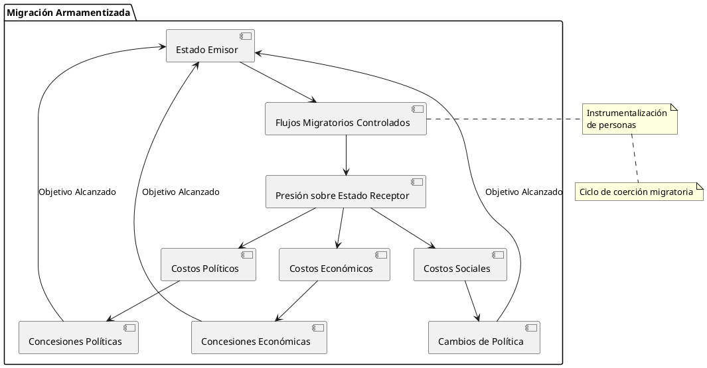
{kind=link}
Tipología de la Migración Armamentizada
Por Origen de Control
- Migración Generada (Refugee Spawning)
- Creación deliberada de condiciones que fuerzan la migración
- Conflictos artificiales o intensificados
- Persecución selectiva de grupos específicos
- Deterioro económico inducido
- Migración Facilitada (Refugee Facilitating)
- Aprovechamiento de flujos migratorios existentes
- Facilitación de tránsito hacia objetivos específicos
- Manipulación de rutas migratorias
- Provisión selectiva de documentación
- Migración Instrumentalizada (Refugee Instrumentalizing)
- Uso directo de poblaciones migrantes como herramientas
- Transporte organizado hacia fronteras específicas
- Creación de crisis migratorias artificiales
- Manipulación mediática de la situación humanitaria
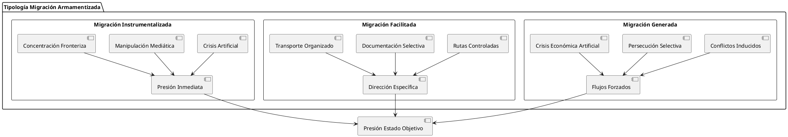
{kind=link}
Análisis Histórico: Precedentes y Evolución
Antecedentes Históricos
Era Pre-Westfaliana
La instrumentalización migratoria tiene precedentes milenarios:
| Período | Caso | Mecanismo | Resultado |
|---|---|---|---|
| Antigüedad | Deportaciones asirias | Desarraigo poblacional | Control territorial |
| Imperio Romano | Foederati y asentamientos | Reubicación estratégica | Integración controlada |
| Reconquista | Expulsiones religiosas | Homogeneización | Consolidación identitaria |
| Colonización | Migraciones forzadas | Poblamiento dirigido | Control territorial |
Siglo XX: Institucionalización del Fenómeno
- Primera Guerra Mundial
- Intercambios poblacionales Grecia-Turquía (1923)
- Deportaciones en Imperio Otomano
- Reconfiguración demográfica de los Balcanes
- Segunda Guerra Mundial
- Deportaciones masivas nazis
- Desplazamientos forzados soviéticos
- Reordenamiento poblacional en Europa Oriental
- Guerra Fría
- Refugiados como símbolos ideológicos
- Crisis de los balseros cubanos
- Instrumentalización de disidentes
Casos Paradigmáticos Contemporáneos
Crisis Migratoria Europea (2015-2016)
La crisis migratoria europea constituye un caso de estudio fundamental sobre múltiples dimensiones de instrumentalización:
- Actores y Motivaciones
Actor Rol Motivación Instrumentos Turquía Facilitador/Chantajista Presión para acuerdo UE Control apertura/cierre rutas Rusia Desestabilizador Debilitamiento cohesión UE Apoyo conflictos generadores Traficantes Instrumentalizadores Beneficio económico Redes organizadas ISIS Generador Estrategia terror/reclutamiento Conflicto y amenazas infiltración 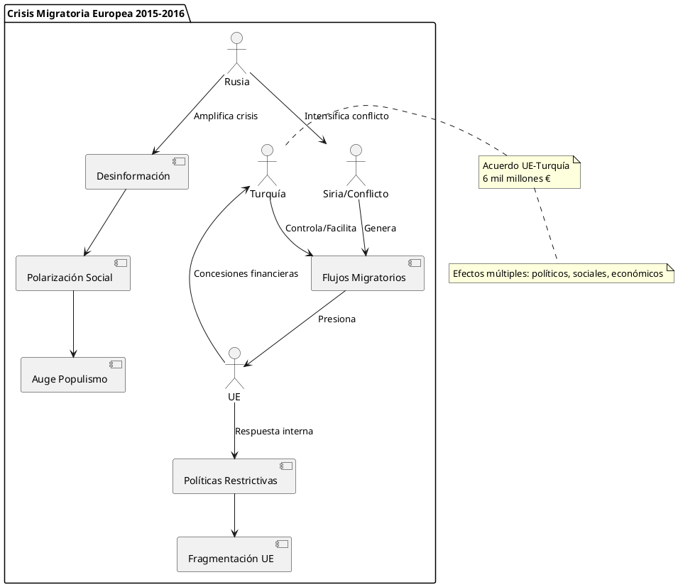
{kind=link}
Crisis Fronteriza Polonia-Bielorrusia (2021)
Este caso representa una evolución táctica del weaponized migration:
- Cronología y Mecánica Operacional
Fase Período Acciones Bielorrusas Respuesta Polaca/UE Preparación Jun-Ago 2021 Facilitación visas turísticas Monitoreo inicial Escalada Sep-Oct 2021 Transporte organizado fronteras Declaración estado emergencia Crisis Nov 2021 Concentración masiva frontera Cierre fronterizo, sanciones Resolución Dic 2021-Ene 2022 Repatriaciones parciales Mantención medidas restrictivas - Análisis Estratégico
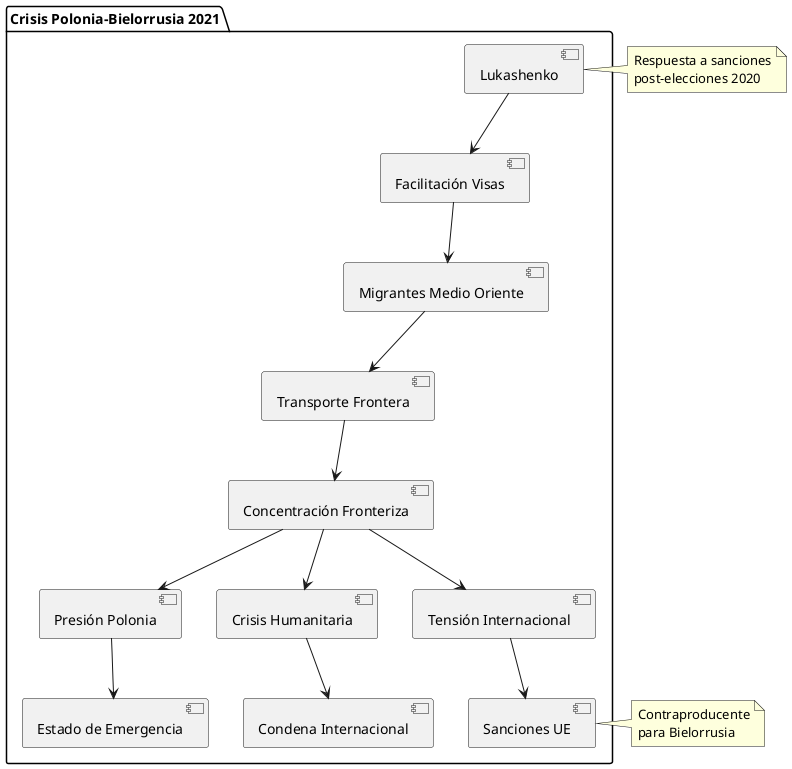
{kind=link}
Mecanismos y Tácticas de Instrumentalización
Fase de Generación
Creación de Condiciones Expulsoras
- Violencia Selectiva
- Persecución dirigida de grupos específicos
- Intensificación controlada de conflictos
- Operaciones de "limpieza" étnica o política
- Terrorismo de Estado focalizado
- Deterioro Económico Inducido
- Sanciones internas selectivas
- Restricción acceso servicios básicos
- Manipulación de mercados locales
- Corrupción institucional dirigida
Manipulación de Narrativas
| Tipo de Narrativa | Objetivo | Audiencia | Efectos |
|---|---|---|---|
| Victimización | Justificar éxodo | Internacional | Simpatía/apoyo |
| Demonización | Legitimar persecución | Interna | Apoyo doméstico |
| Heroización | Presentar como salvador | Múltiple | Liderazgo regional |
| Inevitabilidad | Naturalizar crisis | Estado objetivo | Aceptación/resignación |
Fase de Canalización
Control de Rutas Migratorias
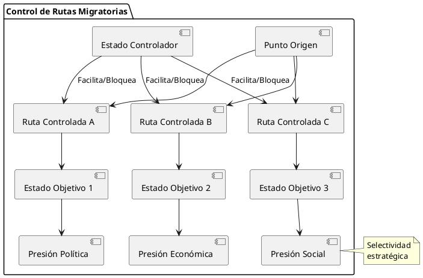
{kind=link}
Facilitación Selectiva
- Documentación diferencial por destino
- Transporte organizado y subsidiado
- Información direccional específica
- Protección selectiva durante tránsito
Fase de Instrumentalización
Timing Estratégico
- Coincidencia con procesos electorales
- Aprovechamiento de crisis internas
- Sincronización con negociaciones internacionales
- Escalada durante períodos de debilidad institucional
Amplificación Mediática
- Cobertura internacional coordinada
- Manipulación de imágenes humanitarias
- Desinformación sobre números y composición
- Narrativas de crisis artificial
Actores y Motivaciones
Estados Instrumentalizadores
Tipología por Capacidades
| Tipo de Estado | Capacidades | Limitaciones | Ejemplos |
|---|---|---|---|
| Potencias Regionales | Control territorial amplio | Costo reputacional alto | Turquía, Irán |
| Estados Autoritarios | Libertad de acción interna | Recursos limitados | Bielorrusia, Myanmar |
| Estados Fallidos | Ausencia de controles | Impredecibilidad | Libia, Afganistán |
| Actores No Estatales | Flexibilidad operacional | Recursos y alcance limitados | ISIS, Carteles |
Motivaciones Estratégicas
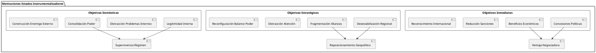
{kind=link}
Estados Objetivo
Vulnerabilidades Específicas
- Democracias Liberales
- Obligaciones legales internacionales
- Presión de opinión pública
- Procesos decisorios complejos
- Sensibilidad a crisis humanitarias
- Capacidad de Absorción Limitada
- Sistemas de acogida saturables
- Recursos financieros limitados
- Infraestructura social restringida
- Cohesión social vulnerable
Costos de la Instrumentalización
| Tipo de Costo | Descripción | Medición | Impacto Temporal |
|---|---|---|---|
| Económico Directo | Gastos procesamiento/acogida | Miles millones € | Inmediato-Medio |
| Social | Tensiones intercomunitarias | Índices cohesión social | Medio-Largo |
| Político | Fragmentación/polarización | Apoyo a partidos extremos | Medio-Largo |
| Institucional | Sobrecarga sistemas | Eficiencia administrativa | Inmediato-Medio |
| Internacional | Deterioro relaciones | Índices cooperación | Largo plazo |
Dimensiones Geopolíticas y Geoestratégicas
Instrumentalización en Contexto de Guerra Híbrida
La migración armamentizada se inscribe dentro del paradigma de guerra híbrida como complemento a:
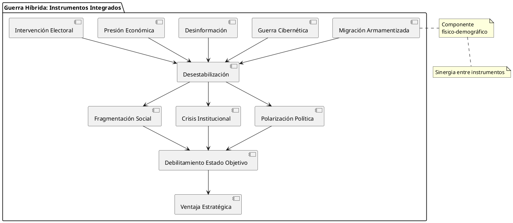
{kind=link}
Efectos Sinérgicos
- Desinformación + Migración: Amplificación de narrativas xenófobas
- Ciberataques + Crisis Migratoria: Sobrecarga sistemas estatales
- Presión Económica + Flujos: Maximización costos para Estado objetivo
- Intervención Electoral + Polarización: Capitalización política de crisis
Dimensiones Regionales Específicas
Europa: Fragmentación de la Integración
| Aspecto | Impacto | Evidencia | Consecuencias |
|---|---|---|---|
| Principio Schengen | Cuestionamiento | Controles fronterizos temporales | Renacionalización políticas |
| Solidaridad Europea | Erosión | Rechazo cuotas redistribución | Fragmentación Norte-Sur/Este-Oeste |
| Valores Fundamentales | Tensión | Políticas restrictivas Hungría/Polonia | Crisis Estado de Derecho |
| Política Exterior Común | Debilitamiento | Divergencias sobre política turca | Pérdida influencia global |
Mediterráneo: Proxy Wars Migratorias
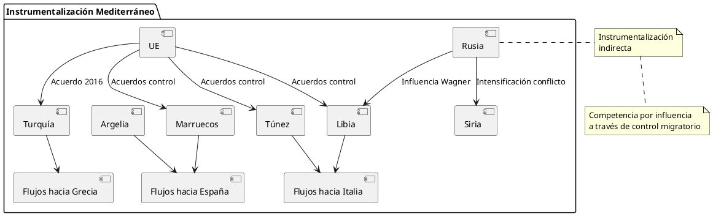
{kind=link}
Américas: Presión sobre Estados Unidos
- Instrumentalización Indirecta
- Venezuela: Éxodo hacia países vecinos y eventual presión sobre EE.UU.
- Centroamérica: Flujos ampliados por políticas específicas
- México: Posición de país de tránsito instrumentalizada
- Dimensiones Electorales
- Timing de crisis migratorias con ciclos electorales
- Polarización doméstica sobre políticas migratorias
- Instrumentalización por actores políticos internos
Impactos y Consecuencias Multidimensionales
Efectos sobre Estados Receptores
Impactos Políticos
- Fragmentación del Espectro Político
Tendencia Manifestación Ejemplos Consecuencias Auge Populismo Partidos anti-inmigración AfD, Liga, VOX Radicalización política Polarización División social extrema Brexit, Trump Ingobernabilidad Erosión Centro Decline partidos tradicionales Crisis socialdemócrata Inestabilidad Autoritarismo Restricción derechos Hungría, Polonia Erosión democrática - Reconfiguración Alianzas Internacionales
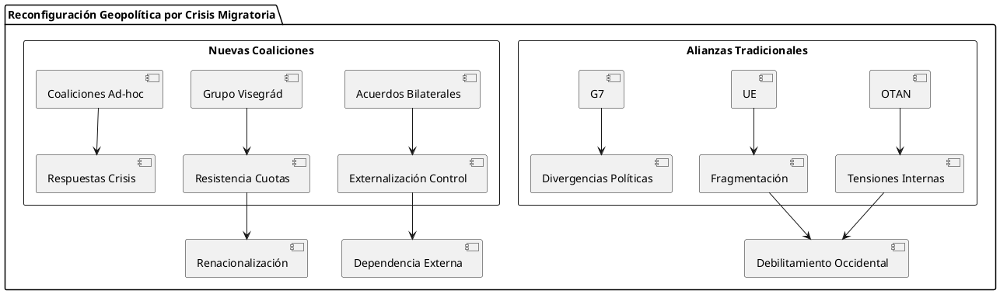
{kind=link}
Impactos Económicos
- Costos Directos e Indirectos
- Costos Directos (Estimaciones Europa 2015-2020)
Categoría Costo Anual (€ Billones) Descripción Procesamiento 15-20 Registro, evaluación solicitudes Acogida Temporal 25-30 Alojamiento, alimentación, servicios básicos Integración 10-15 Educación, formación, inserción laboral Seguridad 5-8 Control fronterizo, investigación Administración 3-5 Gestión burocrática, coordinación TOTAL 58-78 Costo agregado anual
- Costos Directos (Estimaciones Europa 2015-2020)
- Efectos Económicos Secundarios
- Presión Mercado Laboral: Competencia en sectores de baja cualificación
- Impacto Fiscal: Relación costo-beneficio a largo plazo
- Efectos Redistributivos: Impacto diferencial por regiones y clases sociales
- Innovación: Potencial entrepreneurial y demográfico
Impactos Sociales y Culturales
- Transformación Demográfica
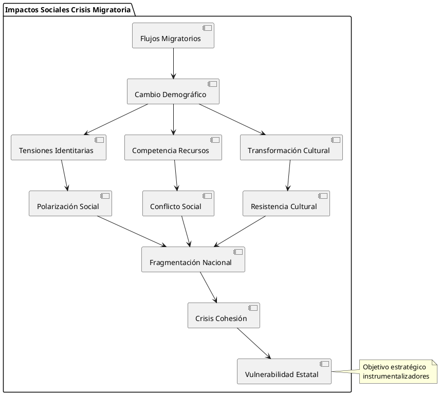
- Dinámicas de Integración vs. Segregación
Factor Integración Exitosa Segregación Variables Determinantes Concentración Geográfica Dispersión equilibrada Guetización Políticas habitacionales Acceso Educación Inclusión educativa Segregación escolar Recursos y diseño curricular Participación Laboral Inserción productiva Economía informal Reconocimiento títulos, formación Participación Política Ciudadanía activa Exclusión política Marcos legales inclusión Relaciones Interculturales Multiculturalismo Comunitarismo Políticas interculturales
{kind=link}
Efectos sobre Migrantes (Víctimas de Instrumentalización)
Deshumanización y Victimización Secundaria
- Proceso de Instrumentalización Personal
Los migrantes objeto de weaponization sufren múltiples victimizaciones:
- Victimización Primaria: Condiciones originales de expulsión
- Victimización Instrumental: Uso como herramientas políticas
- Victimización Receptora: Rechazo y hostilidad en destino
- Victimización Institucional: Procesos burocráticos deshumanizadores
Consecuencias Psicosociales
| Dimensión | Efectos | Duración | Intervenciones |
|---|---|---|---|
| Trauma Individual | PTSD, depresión, ansiedad | Largo plazo | Atención psicológica especializada |
| Fragmentación Familiar | Separaciones, reagrupaciones | Generacional | Políticas reunificación familiar |
| Pérdida Identitaria | Crisis identidad cultural | Permanente | Programas preservación cultural |
| Marginalización Social | Exclusión, discriminación | Variable | Políticas anti-discriminación |
Marco Legal y Normativo Internacional
Instrumentos Jurídicos Aplicables
Derecho Internacional de Refugiados
- Convención de Ginebra (1951) y Protocolo (1967)
- Principios Fundamentales Vulnerados
Principio Contenido Violación por Instrumentalización Non-refoulement Prohibición devolución Uso como amenaza coercitiva No discriminación Igualdad de trato Selección por origen/destino No sanción Prohibición penalización Criminalización de flujos Derecho a asilo Acceso a procedimientos Obstaculización deliberada
- Principios Fundamentales Vulnerados
- Interpretación Evolutiva del Estatuto de Refugiado
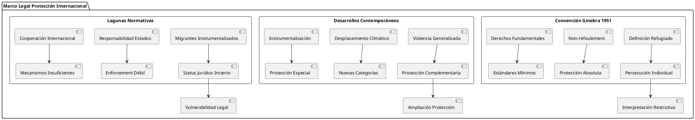
{kind=link}
Derecho Internacional Humanitario
- Aplicabilidad en Contextos de Instrumentalización
- Problemas de Calificación Jurídica
Situación Calificación Tradicional Desafíos Weaponization Consecuencias Legales Conflicto Armado Aplicación plena DIH Instrumentalización en "paz" Lagunas protección Tiempo de Paz Derecho DDHH Actos asimilables a guerra Insuficiencia marcos Situación Híbrida Aplicación simultánea Indeterminación normativa Fragmentación protección
Responsabilidad Internacional del Estado
{kind=link}
Jurisprudencia Internacional Relevante
- Casos Paradigmáticos
Caso Tribunal Principio Establecido Aplicabilidad Weaponization LaGrand CIJ Reparación integral Daños a migrantes instrumentalizados Avena CIJ Protección consular Derechos migrantes en tránsito Barcelona Traction CIJ Protección diplomática Limitaciones protección Chorzów Factory CPJI Restitutio in integrum Reparación daños masivos
Soft Law y Desarrollos Normativos
- Pacto Mundial para la Migración (2018)
- Objetivos Relevantes para Weaponized Migration
- Objetivo 8: Salvar vidas y establecer esfuerzos coordinados
- Objetivo 13: Utilizar la detención de migrantes solo como último recurso
- Objetivo 15: Proporcionar acceso a servicios básicos para los migrantes
- Objetivo 23: Fortalecer la cooperación internacional
- Objetivos Relevantes para Weaponized Migration
- Principios Rectores sobre Desplazamiento Interno (1998)
- Prohibición de desplazamiento arbitrario
- Protección durante desplazamiento
- Soluciones duraderas
- Responsabilidad estatal primaria
Respuestas y Contramedidas
Estrategias Defensivas de Estados Objetivo
Enfoques Unilaterales
- Medidas de Control Fronterizo
Medida Efectividad Costos Consecuencias Cierre Fronterizo Alta (corto plazo) Económicos altos Violación DDHH Detención Masiva Media Administrativos altos Crisis humanitaria Retorno Sumario Alta (controversial) Legales altos Violación non-refoulement Estados de Excepción Variable Democráticos altos Erosión Estado Derecho - Instrumentos Económicos
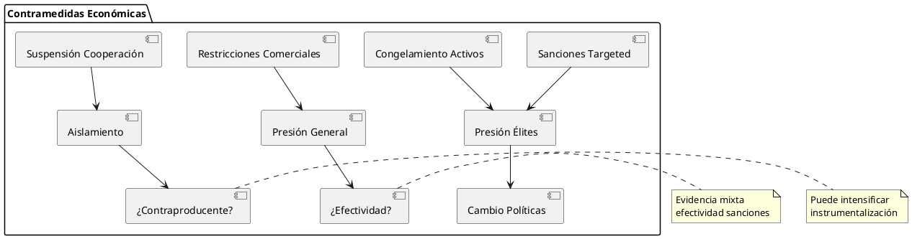
{kind=link}
Enfoques Multilaterales
- Cooperación Regional
- UE: Sistema Europeo Común de Asilo (SECA)
- África: Marco de Kampala sobre Desplazamiento Interno
- Américas: Declaración de Cartagena y proceso post-Cartagena
- Asia-Pacífico: Plan de Acción Integral (CPA) - limitado
- Mecanismos de Burden-Sharing
Mecanismo Cobertura Efectividad Limitaciones Reubicación UE (limitada) Baja Resistencia Estados Responsabilidad Compartida Global (ACNUR) Media Recursos insuficientes Financiación Conjunta Regional/Global Variable Condicionalidades Externalización Norte-Sur Alta (controversial) Violaciones DDHH
{kind=link}
Dimensiones Éticas y Humanitarias
Dilemas Éticos Fundamentales
Tensión Soberanía vs. Humanidad
- Conflicto de Principios
Principio Fundamento Implicaciones Limitaciones Soberanía Estatal Derecho internacional clásico Control absoluto fronteras No absoluta desde DDHH Protección Internacional DDHH y DIH Obligaciones erga omnes Enforcement limitado No Instrumentalización Dignidad humana Prohibición uso personas Principio emergente Solidaridad Internacional Cooperación multilateral Burden-sharing equitativo Voluntariedad predominante
Responsabilidad de Proteger (R2P)
- Aplicabilidad a Weaponized Migration
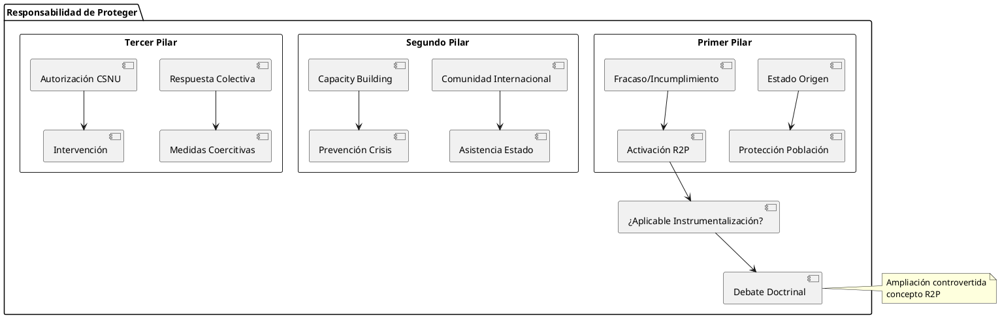
- Debates Doctrinales
- Argumentos a Favor
- Generación deliberada de desplazamiento como crimen contra humanidad
- Obligación internacional de prevenir instrumentalización
- Fracaso estatal justifica intervención internacional
- Argumentos en Contra
- R2P limitada a cuatro crímenes específicos
- Riesgo de abuso para justificar intervención
- Instrumentalización no necesariamente masiva
- Argumentos a Favor
{kind=link}
Impacto en Derechos Humanos
- Derechos Afectados en Instrumentalización
- Clasificación por Generaciones
Generación Derechos Específicos Violaciones Típicas Obligaciones Estatales Primera Vida, libertad, seguridad Deportaciones, detenciones arbitrarias Respeto absoluto Segunda Salud, educación, trabajo Negación servicios básicos Provisión progresiva Tercera Desarrollo, paz, ambiente Instrumentalización colectiva Cooperación internacional
- Clasificación por Generaciones
- Grupos Vulnerables
{kind=link}
Casos de Estudio Detallados
Caso 1: Instrumentalización Rusa en Siria (2015-2016)
Contexto y Mecánica Operacional
- Estrategia Integrada
La instrumentalización rusa del conflicto sirio representa un caso paradigmático de weaponized migration integrada en estrategia geopolítica más amplia:
- Elementos de la Estrategia
- Intensificación del Conflicto: Bombardeos sistemáticos de infraestructura civil
- Targeting Selectivo: Hospitales, escuelas, mercados - violación DIH
- Generación de Flujos: Desplazamiento masivo hacia fronteras turcas
- Amplificación Mediática: Narrativa de "crisis de refugiados europea"
- Elementos de la Estrategia
- Cronología de Escalada
Período Acciones Rusas Flujos Generados Impacto Europeo Sep-Nov 2015 Inicio bombardeos 200,000 desplazados Presión inicial UE Dic 2015-Feb 2016 Intensificación Alepo 500,000 desplazados Crisis política interna Mar-May 2016 Operaciones quirúrgicas 300,000 desplazados Acuerdo UE-Turquía Jun-Ago 2016 Consolidación territorial Flujos residuales Estabilización relativa
Análisis de Efectividad
- Objetivos Alcanzados
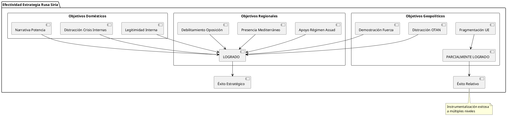
- Costos para Europa
Estimaciones de Impacto (2015-2018):
- Económico: €120-150 mil millones en costos directos
- Político: Auge de partidos anti-UE (+15-25% apoyo promedio)
- Social: Polarización en índices de cohesión social
- Institucional: Crisis Schengen, fragmentación solidaridad europea
{kind=link}
Caso 2: Marruecos-España Crisis Ceuta (2021)
Génesis de la Crisis
- Contexto Previo
La crisis de Ceuta de mayo 2021 ilustra instrumentalización táctica por disputa diplomática específica:
- Secuencia Operacional
Fecha Acción Marroquí Respuesta Española Escalada 17 Mayo Relajación control fronterizo Alerta servicios fronterizos 18 Mayo Llegada masiva Ceuta (+8,000) Despliegue ejército Inicio crisis 19 Mayo Facilitación activa cruces Negociaciones diplomáticas Escalada militar 20-21 Mayo Restauración gradual control Devoluciones masivas Pico crisis
Análisis Táctico
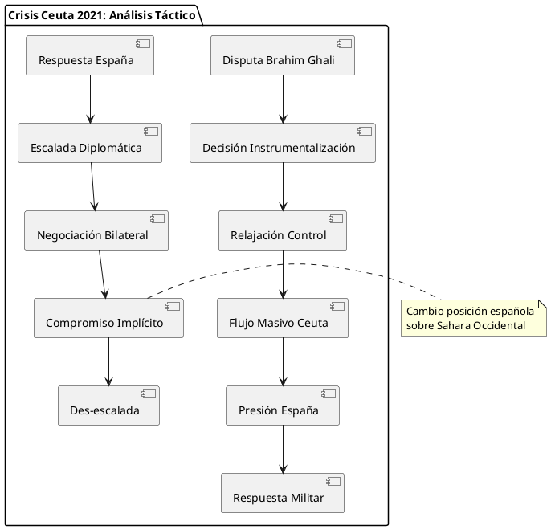
{kind=link}
Resultados Estratégicos
- Para Marruecos
- Demostración capacidad de presión sobre España
- Obtención posteriormente de cambio posición española sobre Sahara
- Consolidación de instrumentalización migratoria como herramienta diplomática
- Para España
- Exposición vulnerabilidad a instrumentalización
- Necesidad de recalibrar relación con Marruecos
- Cuestionamiento de política de fronteras
Caso 3: Venezuela-Región (2015-presente)
Características Distintivas
- Instrumentalización Indirecta
- No hay targeting específico de Estados receptores
- Instrumentalización interna: Control de salidas como válvula de escape
- Instrumentalización por terceros: Otros actores usan crisis venezolana
- Efectos regionales masivos: 7+ millones de desplazados
- Fases de la Crisis
Fase Período Características Flujos Aproximados Inicial 2015-2017 Migración económica 1.5 millones Aceleración 2018-2019 Crisis humanitaria +3 millones Saturación 2020-2021 Impacto COVID-19 +2 millones Estabilización 2022-presente Nuevos patrones +0.5 millones
{kind=link}
Perspectivas Futuras y Tendencias Emergentes
Evolución Tecnológica del Weaponized Migration
Nuevas Herramientas de Control
- Tecnologías de Facilitación
Tecnología Aplicación Potencial Instrumentalización Contramedidas Apps de Navegación Rutas migratorias Direccionamiento específico Monitoreo, bloqueo Criptomonedas Financiación trayectos Pagos anónimos Regulación, trazabilidad Redes Sociales Coordinación grupos Movilización masiva Desinformación, censura IA/Big Data Análisis predictivo Timing óptimo crisis Inteligencia artificial - Sistemas de Monitoreo y Predicción
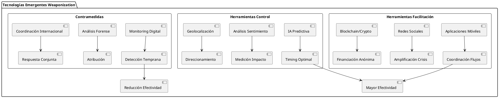
{kind=link}
Escenarios Futuros Probables
- Escenario 1: Escalada Tecnológica
- Uso masivo de IA para optimización de timing y targeting
- Instrumentalización a través de plataformas digitales
- Guerra de información integrada con crisis migratorias
- Respuestas automatizadas y predecibles de Estados objetivo
- Probabilidad: Alta (70-80%) Timeframe: 2025-2030
- Escenario 2: Regulación Internacional
- Desarrollo de marco legal específico sobre weaponized migration
- Mecanismos internacionales de monitoreo y sanción
- Cooperación reforzada en early warning systems
- Institucionalización de respuestas multilaterales
- Probabilidad: Media (40-50%) Timeframe: 2030-2035
- Escenario 3: Normalización del Fenómeno
- Aceptación de instrumentalización como herramienta diplomática legítima
- Desarrollo de "reglas del juego" implícitas
- Profesionalización de respuestas estatales
- Institucionalización de intercambios coercitivos
- Probabilidad: Media-Alta (60-70%) Timeframe: 2025-2030
Implicaciones para el Sistema Internacional
{kind=link}
Reconfiguración del Balance de Poder
- Nuevas Jerarquías Internacionales
Tipo de Poder Definición Ejemplos Consecuencias Poder Generativo Capacidad crear flujos Siria, Venezuela Influencia desproporcionada Poder de Tránsito Control rutas migratorias Turquía, Marruecos, México Posición negociadora Poder Absorción Capacidad gestión masiva Alemania, EE.UU. Liderazgo por necesidad Poder Resistencia Capacidad rechazo Australia, Hungría Modelo alternativo
{kind=link}
Recomendaciones y Propuestas
Para la Comunidad Internacional
Marco Normativo Específico
- Elementos de Convención sobre Instrumentalización Migratoria
- Propuesta de Estructura Normativa
- Definición Legal Precisa
- Elementos constitutivos de weaponized migration
- Diferenciación de flujos espontáneos
- Umbral de gravedad para activación
- Prohibiciones Específicas
- Generación deliberada de desplazamiento coercitivo
- Facilitación instrumentalizada de flujos
- Obstaculización de soluciones duraderas
- Obligaciones Estatales
- Prevención de instrumentalización desde territorio propio
- Cooperación en identificación y respuesta
- Protección de víctimas de instrumentalización
- Mecanismos de Enforcement
- Sistema de monitoreo internacional
- Procedimientos de investigación
- Régimen de sanciones graduales
- Definición Legal Precisa
- Propuesta de Estructura Normativa
{kind=link}
Para Estados Potencialmente Objetivo
Estrategias de Preparación
- Matriz de Preparación Nacional
Dimensión Nivel Básico Nivel Intermedio Nivel Avanzado Legal Marco normativo mínimo Procedimientos especializados Legislación integral Institucional Punto focal único Coordinación interagencial Centro especializado Operacional Protocolos básicos Planes contingencia Sistemas automatizados Internacional Contactos bilaterales Redes regionales Coaliciones especializadas Social Información básica Programas preparación Resiliencia comunitaria
Instrumentos de Disuasión
- Disuasión Integrada
- Elementos de Estrategia Disuasoria
- Disuasión por Negación
- Capacidad absorción y gestión eficiente
- Sistemas early warning efectivos
- Respuesta coordinada y profesional
- Disuasión por Castigo
- Capacidad imposición costos
- Coaliciones de respuesta
- Instrumentos de retaliación
- Disuasión por Resiliencia
- Fortalecimiento de la Cohesión Social: Implementar políticas de integración proactivas para evitar polarización y narrativas xenófobas (ejemplo: programas de educación intercultural, campañas de sensibilización pública).
- Capacidad Institucional Reforzada: Desarrollar sistemas administrativos resilientes (ejemplo: centros especializados de gestión migratoria, protocolos estandarizados).
- Narrativas Contrarrestadas: Estrategias de comunicación para contrarrestar manipulación mediática (ejemplo: campañas proactivas para desmentir desinformación).
- Resiliencia Económica: Fondos de contingencia y financiación flexible para absorber costos (ejemplo: Fondo Fiduciario de la UE para África).
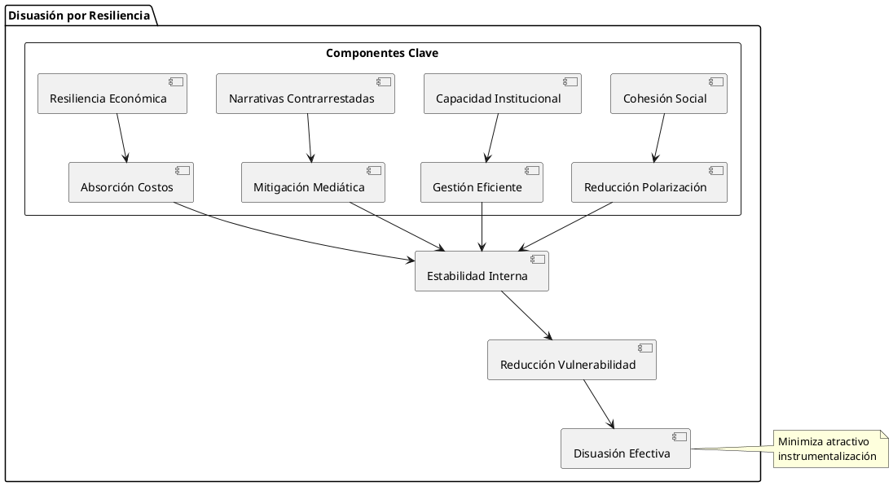
- Disuasión por Negación
- Elementos de Estrategia Disuasoria
{kind=link}
Conclusión
La migración armamentizada representa un desafío multidimensional para el sistema internacional, integrando tácticas de guerra híbrida con profundas implicaciones geopolíticas, legales, éticas y humanitarias. Los casos analizados (Siria, Ceuta, Venezuela) ilustran la diversidad de estrategias y contextos, mientras que las propuestas normativas y estratégicas ofrecen un marco para mitigar sus efectos. La evolución tecnológica y la posible normalización del fenómeno requieren una respuesta coordinada y proactiva, priorizando la protección de los derechos humanos y la estabilidad global.
El Impacto de las Migraciones en la Geopolítica, Geoestrategia y el Balance de Poder Global (i)